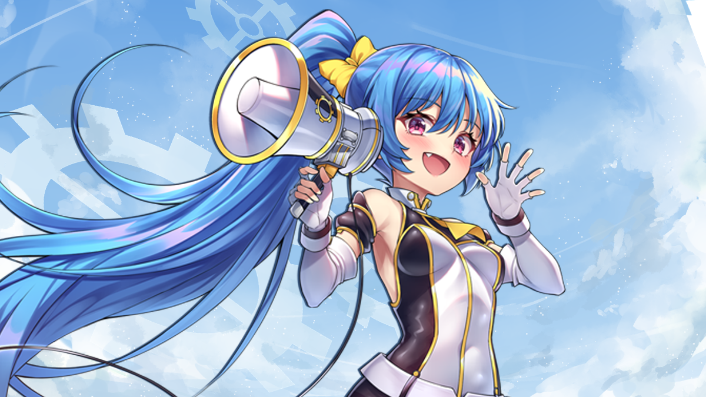

B-20230926
My Cosplay Adventures: Preparation for AniRevo 2023

It was mid March and I was conversing with a fellow sailor about our plans in the summer. Because I was
planning on heading back to school in September, I decided to have a mini-vacation here locally where I
reside; the Greater Vancouver Area. The conversation led to us talking about our mutal interest in Anime and
Manga which then led to the mention of a local anime convention. This small convention is called Anime
Revolution or AniRevo for short. For this year (2023), it was running from 18 August 2023 to 20 August 2023.
At this moment in mid March, I began to plan my time at AniRevo 2023.
As part of my grand plan for the convention, I decided to pursue cosplaying again. I have not publically
cosplayed since 2018 when I cosplayed Japan from Hetalia: Axis Power. At that time, I was just a beginner so
I didn't do a excellent job to warrent pictures, but it was fun overall. So this year, I told myself I will
begin cosplaying as a challenge for my body image and self confidence. This year, I went as Inosuke from
Kimetsu no Yaiba (Demon Slayer).
For those who don't know, Inosuke is a hot headed demon slayer who was raised by boars in the wild. He
doesn't have a sense of empathy for people around him and constantly competes to see who is physically
stronger. Now I don't have a personality like Inosuke but it would be fun pretenting to be that for a the
convention. Aside from personality of Inosuke, his physical apperance was a challenge to achieve. Inosuke
wears a boar head headpiece, shirtless, and wears blue pants with a fur skirt. His physique is toned and
muscular which I am not. This poses to be a challenge for me.
With this new challenge and motivation, I forced myself to exercise and workout everyday, attending all
physical training classes at my workplace. Slowly and slowly I began to lose weight and build muscle, this
continued until the day of the convention.
The Day of the Convention!
The morning of the convention, I woke up early in the morning, excited and nervious. I did some final
detailing on the cosplay and personal preparations before putting on the final cosplay. At 0800, I departed
my house to the convention; the drive was long and the closer I got to the venue the more nervous I became.
I had thoughts of what if my physique causes onlookers disgust and what if I dont live up to the
expectations of the character. However, my partner told me not to be nervous and I kept telling myself this
is just for fun and to play as your favourite character.
As we parked the car, across of me was another person cosplaying the same character, however they had the
physique of Inosuke. Seeing this made me more nervous. I waited until they left their car to the convention
before I popped out of my car. I told myself, there will be duplicate cosplayers so it is fine and I
reassured myself that my hardwork will pay off. And so it did...
Throughout the three days of the convention, I ended up having multiple convention goers stop me for
pictures with me and I even ended up being a model for professional photographers. This made me more
confident and gave me a sense of joy for what I am doing; it became more fun as my friends complimented me
as well.
All in all, this experience was enjoyable and fun. And I will definetly continue to model for cosplay, body
training, and create my own cosplay.